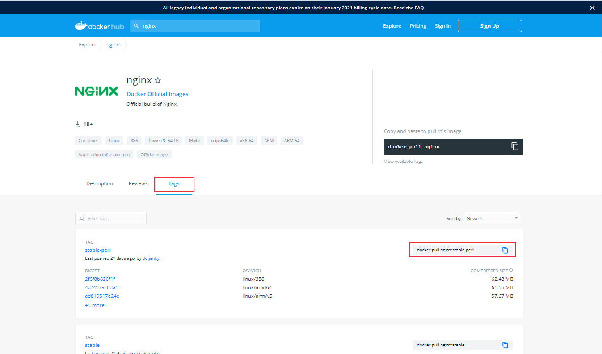
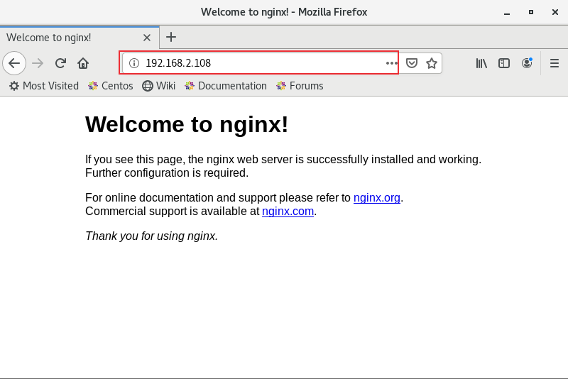
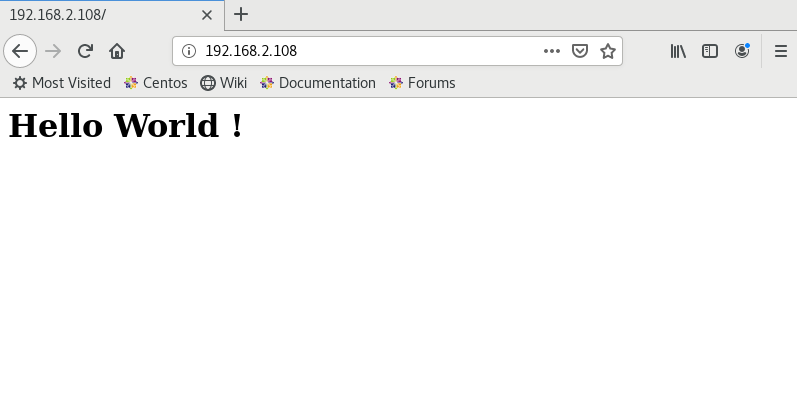

本文介绍常用Docker命令，以搭建Web服务器Nginx为例介绍docker相关命令。
基本命令
查看Docker版本信息:1
$ docker version
查看Docker系统信息:1
$ docker info
从Docker Hub查找镜像1
2
3$ docker search 镜像名
# 搜索nginx镜像
$ docker search nginx
拉取镜像1
$ docker pull nginx
1
2
3
4
5
6
7
8
9
10
11
12[root@server server]# docker pull nginx
Using default tag: latest
latest: Pulling from library/nginx
a076a628af6f: Pull complete
0732ab25fa22: Pull complete
d7f36f6fe38f: Pull complete
f72584a26f32: Pull complete
7125e4df9063: Pull complete
Digest: sha256:10b8cc432d56da8b61b070f4c7d2543a9ed17c2b23010b43af434fd40e2ca4aa
Status: Downloaded newer image for nginx:latest
docker.io/library/nginx:latest
[root@server server]#
下载指定版本的镜像1
$ docker pull nginx:1.19.6
镜像的可用版本可在docker hub中查看：https://hub.docker.com/ ：

镜像管理
查看所有已下载镜像1
$ docker images
1
2
3
4
5
6
7
8
9
10
11
12[root@server server]# docker images
REPOSITORY TAG IMAGE ID CREATED SIZE
nginx latest f6d0b4767a6c 3 weeks ago 133MB
app v1 db282454f6b3 7 months ago 83.1MB
<none> <none> 1acc89e1a291 7 months ago 152MB
bitnami/mariadb latest 08498502c6b7 7 months ago 319MB
bitnami/testlink latest 41feee91d195 7 months ago 826MB
prom/prometheus latest 39d1866a438a 7 months ago 142MB
mysql 5.7 9cfcce23593a 7 months ago 448MB
python 3.7-alpine 6a5ca85ed89b 8 months ago 72.5MB
jenkins/jenkins lts 5d1103b93f92 8 months ago 656MB
[root@server server]#
删除镜像1
2
3
4
5$ docker rmi nginx:latest
# 或者使用IMAGE ID
$ docker rmi f6d0b4767a6c
# 强制删除镜像
$ docker rmi -f f6d0b4767a6c
标记本地镜像1
2
3$ docker tag nginx:latest nginx:test
# 修改镜像名称
$ docker tag nginx:latest nginx_test1
2
3
4
5
6
7
8
9
10
11
12
13[root@server server]# docker images
REPOSITORY TAG IMAGE ID CREATED SIZE
nginx latest f6d0b4767a6c 3 weeks ago 133MB
nginx test f6d0b4767a6c 3 weeks ago 133MB
[root@server server]# docker tag nginx:latest nginx_test
REPOSITORY TAG IMAGE ID CREATED SIZE
nginx latest f6d0b4767a6c 3 weeks ago 133MB
nginx test f6d0b4767a6c 3 weeks ago 133MB
nginx_test latest f6d0b4767a6c 3 weeks ago 133MB
[root@server server]# docker rmi nginx:test
Untagged: nginx:test
[root@server server]# docker rmi nginx_test:latest
Untagged: nginx_test:latest
将指定镜像打包成 tar 归档文件1
2$ docker save nginx > nginx_test.tar
$ docker save nginx -o nginx_test.tar
导入打包的镜像1
$ docker load < nginx_test.tar
查看镜像创建历史1
$ docker history nginx
容器管理
运行容器1
2# 开启nginx服务
$ docker run -p 80:80 -d --name=nginx nginx:latest
-d: 后台运行容器，并返回容器ID
—name: 为容器指定一个名称
-p: 指定端口映射：主机(宿主)端口:容器端口
-v：挂载目录，将主机的目录映射到容器目录
1 | [root@server server]# docker run -p 80:80 -d --name=nginx nginx:latest |
浏览器输入服务器IP地址

挂载目录1
2# 将主机目录/home/server/nginx/html映射到容器目录/usr/share/nginx/html
$ docker run -p 80:80 -d --name=nginx -v /home/server/nginx/html:/usr/share/nginx/html nginx:latest
在主机目录/home/server/nginx/html下新建一个index.html文件，输入内容：<h1>Hello World !</h1>1
2
3
4
5[root@server server]# cd /home/haiyong/nginx/html
[root@server html]# vim index.html
[root@server html]# cat index.html
<h1>Hello World !</h1>
[root@server html]#
浏览器刷新

查看运行的容器:1
2$ docker ps
$ docker ps -a
1 | [root@server server]# docker ps |
查看容器中运行的进程1
$ docker top nginx
1
2
3
4[root@server server]# docker top nginx
UID PID PPID C STIME TTY TIME CMD
root 118225 118205 0 22:58 ? 00:00:00 nginx: master process nginx -g daemon off;
101 118284 118225 0 22:58 ? 00:00:00 nginx: worker process
实时监控容器资源消耗1
$ docker stats nginx
1
2
3
4
5
6
7
8[root@server server]# docker stats nginx
CONTAINER ID NAME CPU % MEM USAGE / LIMIT MEM % NET I/O BLOCK I/O PIDS
651ce76dd80f nginx 0.00% 1.492MiB / 1.777GiB 0.08% 3.97kB / 3.66kB 73.7kB / 24.6kB 2
CONTAINER ID NAME CPU % MEM USAGE / LIMIT MEM % NET I/O BLOCK I/O PIDS
651ce76dd80f nginx 0.00% 1.492MiB / 1.777GiB 0.08% 3.97kB / 3.66kB 73.7kB / 24.6kB 2
CONTAINER ID NAME CPU % MEM USAGE / LIMIT MEM % NET I/O BLOCK I/O PIDS
651ce76dd80f nginx 0.00% 1.492MiB / 1.777GiB 0.08% 3.97kB / 3.66kB 73.7kB / 24.6kB 2
CONTAINER ID NAME CPU % MEM USAGE / LIMIT MEM % NET I/O BLOCK I/O PIDS
查看容器日志1
$ docker logs -f nginx
获取容器/镜像的元信息1
2$ docker inspect nginx
$ docker inspect -f '{{.Id}}' nginx
-f ： 格式化字符串，输出格式使用Go语言模板。1
2
3
4
5
6
7
8
9
10
11
12
13
14
15
16
17
18
19
20
21
22
23
24
25
26
27
28
29
30[root@server server]# docker inspect nginx
[
{
"Id": "651ce76dd80fa58e3cdf2abeb9c08662bfcf68176738bb3881d0bcb851aa1a11",
"Created": "2021-02-02T14:58:47.047835997Z",
"Path": "/docker-entrypoint.sh",
"Args": [
"nginx",
"-g",
"daemon off;"
],
"State": {
"Status": "running",
"Running": true,
"Paused": false,
"Restarting": false,
"OOMKilled": false,
"Dead": false,
"Pid": 118225,
"ExitCode": 0,
"Error": "",
"StartedAt": "2021-02-02T14:58:48.290043299Z",
"FinishedAt": "0001-01-01T00:00:00Z"
},
............................
[root@server server]# docker inspect -f '{{.Id}}' nginx
651ce76dd80fa58e3cdf2abeb9c08662bfcf68176738bb3881d0bcb851aa1a11
[root@server server]# docker inspect -f '{{.State.StartedAt}}' nginx
2021-02-02T14:58:48.290043299Z
docker inspect返回的容器信息中记录了容器的磁盘挂载目录，可以使用grep命令筛选出Mounts字段内容：
1 | $ docker inspect nginx | grep Mounts -A 10 |
查看容器内文件结构及更改
1 | $ docker diff nginx |
1 | [root@server server]# docker diff webserver |
A：添加了文件或目录
B：文件或目录被删除
C：文件或目录被修改
启动，停止容器1
2
3
4
5
6
7
8
9
10
11
12
13
14
15
16
17
18
19
20
21
22
23# 启动已经被停止的容器
$ docker start nginx
# 重启容器
$ docker restart nginx
# 暂停容器中所有的进程
$ docker pause nginx
# 恢复容器中所有的进程
$ docker unpause nginx
# 杀掉一个运行中的容器
$ docker kill nginx
# 停止一个运行中的容器
$ docker stop nginx
# 删除容器
$ docker rm nginx
# 强制删除容器
$ docker rm -f nginx
1 | [root@server server]# docker ps |
容器交互
在容器中执行命令1
2
3
4
5$ docker exec -it nginx ls
# 开启一个交互模式的终端，exit退出
$ docker exec -it nginx bash
# 使用root账号进入容器
$ docker exec -it -u root nginx bash
1 | [root@server server]# docker exec -it nginx ls |
复制文件1
2
3
4
5# 将容器文件拷贝到主机
$ docker cp nginx:/etc/hosts hosts
# 将主机文件拷贝到容器中
$ docker cp hosts nginx:/etc/hosts
本文标题:容器技术介绍：Docker常用命令
文章作者:hiyo
文章链接:https://hiyongz.github.io/posts/container-docker-command/
许可协议:本博客文章除特别声明外，均采用CC BY-NC-ND 4.0 许可协议。转载请保留原文链接及作者。